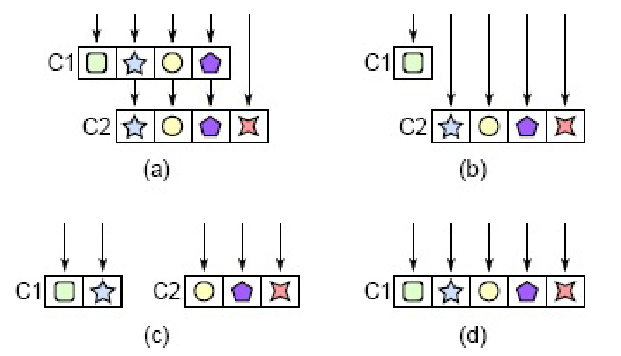

Welcome!
Take a look if you are bored.
CS110L Notes
Notes for CS110L Safety in Systems Programming. Mostly follow Spring 2020, also include Spring 2021.
Not complete, only started taking notes since Lec 10 (2020).
1. Channel
- Golang: Do not communicate by sharing memory; instead, share memory by communicating.
- Message passing: each thread has its own memory, they communicate only by message exchanging.
- In theory, this implies: no shared memory -> no data races -> each thread needs to copy the data -> expensive
- In practice, goroutines share heap memory and only make shallow copies into channels -> pass pointers to channel is dangerous!
- In Rust, passing pointers, e.g.,
Boxis always safe due to ownership transfer - An ideal channel: MPMC (multi-producer, multi-consumer).
1.1. Mutex-based channel implementation
pub struct SemaPlusPlus<T> { queue_and_cv: Arc<(Mutex<VecDeque<T>>, Condvar)>, } impl<T> SemaPlusPlus<T> { pub fn send(&self, message: T) { let (queue_lock, cv) = &*self.queue_and_cv; let mut queue = queue_lock.lock().unwrap(); let queue_was_empty = queue.is_empty(); queue.push_back(message); // if a queue is not empty, then another thread must have notified and main() // must be awake if queue_was_empty { cv.notify_all(); } } pub fn recv(&self) -> T { let (queue_lock, cv) = &*self.queue_and_cv; // wait_while dereferences the guard and pass the protected data to the closure, // when the condition is true, it releases the lock and sleep until another thread // notify_all let mut queue = cv .wait_while(queue_lock.lock().unwrap(), |queue| queue.is_empty()) .unwrap(); queue.pop_front().unwrap() } } fn main() { let sem: SemaPlusPlus<String> = SemaPlusPlus::new(); let mut handlers = Vec::new(); for i in 0..NUM_THREADS { let sem_clone = sem.clone(); let handle = thread::spawn(move || { rand_sleep(); sem_clone.send(format!("thread {} just finished!", i)) }); handlers.push(handle); } // main is the only consumer of the queue, // it wakes up when some thread notify_all, locks the queue, consume the message // and release the lock until it is notified again for _ in 0..NUM_THREADS { println!("{}", sem.recv()) } for handle in handlers { handle.join().unwrap(); } }
- Mutex-based channel is inefficient:
- it does not allow the queue producer and consumer modify the queue simultaneously.
- It involves system calls.
- Go channels are MPMC, but it essentially implement
Mutex<VecDeque<>>with fuxtex.
1.2. Rust crossbeam channel implementation
- Minimal lock usage.
- Channels are not the best choice for global values -> lock still required.
/// Factor the number while receiving numbers from stdin fn main() { let (sender, receiver) = crossbeam_channel::unbounded(); let mut threads = Vec::new(); for _ in 0..num_cpus::get() { // The channel maintains a reference counter for senders and for receivers // when receiver.clone(), the receiver counter increments. let receiver = receiver.clone(); threads.push(thread::spawn(move || { while let Ok(next_num) = receiver.recv() { factor_number(next_num); } })); } let stdin = std::io::stdin(); for line in stdin.lock().lines() { let num = line.unwrap().parse::<u32>().unwrap(); sender.send(num).expect("Cannot send to channel when there is no receiver"); } // decrement the sender counter, when no sender, the channel is closed drop(sender); for thread in threads { thread.join().expect("panic"); } }
2. Networking systems
2.1. System
2.1.1. File system
- Open file (OF) table: system-wide table, stores file position, access mode (read/write) and reference count.
- File descriptor (FD) table: process-specific table, maps file descriptor integers to references in the OF table; multiple FD entries can point to the same OF entry (e.g., parent and child processes share file positions).
- Vnode table: system-wide table, contains file (e.g., terminal, socket) size, permissions, timestamps, disk block locations; multiple OF entries can reference the same vnode entry, indicating same file opened multiple times.
2.1.2. Start a server
- A process creates a socket file descriptor with a queue for connection requests.
- The process binds the socket with specific IP and port.
- The process listens and accepts connections in a loop.
2.1.3. Connect to a server (ignore networking details)
- The client creates a socket and send the socket address in the SYN packet.
- The server accpets the request and start a new clinet-specific socket to establish a bidirectional communication channel.
2.2. Scalability and avilability
- Internet traffic has grown faster than hardware has increased in power.
- Two machines with commodity performance is much cheaper than one machine with 2x performance.
- Need to distribute a system’s functionality over servers using networking.
- Scale out: separate stateless computation and data storage.
- Chaos engineering: intentionally introduce failures on production, e.g., randomly terminates an entire datacenter or even a region.
2.2.1. Load balancers
- Relay client requests to one compute node; health check each compute node.
- Load balancing load balancers:
- Round-robin DNS; DNS return multiple IPs for the same hostname.
- Hard to consistently rotate IPs if the DNS responses are cached.
- DNS has no idea of IP health.
- Geographic routing: DNS servers respond with the load balancer IP closest to the client.
- If the cloest data center is done, availability is still broken.
- IP anycast: multiple computers announce they own the same IP (BGP).
- Round-robin DNS; DNS return multiple IPs for the same hostname.
2.3. Security
- Authentication: who are you? Authorization: are you allowed?
- Prevent confidential data leakage: use a framework to handle every request, check authenticartion/authorization; use type systems.
- Elasticsearch: distributed, open source search and analytics engine for all types of data; involved in multiple data breach incidents.
- Why: bad default settings, e.g., default username and password; accept all connections by default.
- Design principles: needs to be harder to do things wrong than to do thing right.
Org static blog in Neovim
This post records how I use org static blog in Neovim with nvim-orgmode.
1. Emacs non-interactive commands
The emacs batch mode does not really work for me. So I use the emacsclient instead. The basic usage is like following:
emacsclient -e "(org-static-blog-publish)" # no arguments emacsclient -e '(progn (org-static-blog-create-new-post-non-interactive "New Post Title"))' # with arguments
2. Correct HTML export
While I can start a daemon with emacs --daemon to run emacsclient, the HTML export done by org-static-blog-publish lacks correct syntax highlighting in code block and messes up other page layout.
It seems due to under the daemon mode some packages are not properly initialized.
I don’t have enough knowledge for this, so I take a brutal way: open the Emacs GUI, run the command, and close GUI.
On OSX, the commands look like this:
# ~/.config/nvim/scripts/org-static-blog-publish.sh open -n /Applications/Emacs.app --args --eval "(server-start)" sleep 1 # necessary, otherwise emacsclient command is not received emacsclient -e "(org-static-blog-publish)" emacsclient -e "(kill-emacs)"
Then in the Neovim config, execute it like following (don’t forget chmod +x first):
vim.fn.jobstart(vim.fn.expand("~/.config/nvim/scripts/org-static-blog-publish.sh"), {})
3. Modify Emacs function
In the original function, org-static-blog-create-new-post is an interactive command that requires users to input and confirm a title.
To use emacsclient, I wrap it with a non-interactive function like following:
(defun org-static-blog-create-new-post-non-interactive (title) (require 'org-static-blog) (let ((filename (concat (format-time-string "%Y-%m-%d-" (current-time)) (replace-regexp-in-string org-static-blog-suggested-filename-cleaning-regexp "-" (downcase title)) ".org"))) (find-file (concat-to-dir org-static-blog-posts-directory filename)) (save-buffer)))
4. Create Neovim functions
Finally, add the Neovim commands as following:
local M = {} vim.api.nvim_create_user_command("OrgBlogNewPost", function(opts) local title = table.concat(opts.fargs, " ") M.create_post_with_title(title) end, { nargs = "*", desc = "Create new org static blog post" }) vim.api.nvim_create_user_command( "OrgBlogPublish", function() M.publish_blog() end, { desc = "Publish org static blog" } )
Configure PHP with Doom Emacs on Arch Linux
This post records my steps of installing and configuring basic PHP with Doom Emacs and Arch Linux.
1. Terminal Installation
yay php: install PHP.yay composer: install PHP package manager.yay phpactor: install the language server.- Install the following packages with `composer` globally so any project can use it:
composer global require phpunit/phpunit: install PHP test framework.composer global require techlivezheng/phpctags: better code completion.composer global require friendsofphp/php-cs-fixer: code formatting.
- Export the
composerglobal path withexport PATH="$PATH:$HOME/.config/composer/vendor/bin" >> ~/.zshrc. - Configure
phpactorto auto-load global packages:Create file
~/.config/phpactor/phpactor.ymland write to file:composer.autoloader_path: - ~/.config/composer/vendor/autoload.php
2. Emacs Configuration
- Uncomment
(php +lsp)ininit.el. - Add packages
(package! phpactor)and(package! php-cs-fixer)topackages.elto use their interfaces in Emacs. Configure
config.elas following:(after! lsp-mode (setq lsp-disabled-clients '(intelephense php-ls)) ;; disable other language servers (setq lsp-php-server 'phpactor) ;; set the language explicitly (setq lsp-phpactor-path (executable-find "phpactor"))) (use-package! php-mode :hook (php-mode . lsp-deferred)) ;; defer lsp loading- run
doom syncand restart the Emacs.
3. Usage
- Use
M-x lsp-describe-sessionto verifyphpactoris in use. - Use
M-x php-cs-fixer-fixto format the current PHP buffer. - Use
M-x phpunit-current-testto run the tests in the current buffer.
Interesting Rust snippets
1. References
2. Reference and lifetime
let mut x; x = 42; let y = &x; x = 43; assert_eq!(*y, 42);
The above code will cause compiler error at x=43 since x has a shared reference which is still active after x=43. If we comment the assert_eq!, the code compiles.
let mut x = Vec::new(); let y = &mut x; let z = &mut x; y.push(42); z.push(13); assert_eq!(x, [42, 13]);
Similarly, the code above will cause compiler error at let z = &mut x since at this point there exist two mutable references for x. If we swap this line with y.push(42), the error is resolved because y is never used after let z = &mut x now.
The compiler accepts the following code. In *x = 84, the borrow checker takes out a mutable reference to x, while there is also a shared reference r = &x in the scope at the same time, since it is not accessed later, it does not create a conflict flow. Similarly, when println!("{z}"), the borrow checker walks back the path and finds no conflict until the r us created.
let mut x = Box::new(42); let r = &x; // lifetime 'a starts if rand() > 0.5 { // deref a Box returns a shared or a mutable reference *x = 84; } else { println!("{z}"); } // println!("{z}"); // this will cause the compiler error
The following code also compiles, even when the lifetime is intermittently invalid:
let mut x = Box::new(42); let mut z = &x; // liefttime 'a starts for i in 0..100 { println!({"z"}); // lifetime 'a ends here x = Box::new(i); // x is moved z = &x; // restart lifetime 'a } println!("{z}"); // 'a ends here
In the following code, we have to use two generic lifetime annotations:
struct MutStr<'a, 'b> { _s: &'a mut &'b str } let mut s = "hello"; // creates a 'static lifetime to "hello" *MutStr {_s: &mut s}._s = "world"; // creates a mutable reference to s println!("{s}"); // creates a shared reference to s, now s is "world"
To println("{s}"), the borrow checker has to assume that the lifetime of the mutable reference to s 'a ends at the line before, and 'b is always 'static as a reference to a string slice.
If we use 'a only, then the borrow checker tries to shorten 'static to 'a, but since the lifetime is behind &mut which is invariant (see “Rust for Rustaceans” Ch 1), the conversion will fail.
Lifetimes are required when there exists mutable references in the function parameters, even if there is no output reference. In the following code, we need 'contents to make sure the new inserted value lives for at least as long as the vector content.
fn insert_value<'vector, 'content>(my_vec: &'vector mut Vec<&'content i32>, value: &'content i32) { my_vec.push(value); // value needs to live for as long as the contents of my_vec, aka my_vec } fn main() { let x = 1; let my_vec = vec![&x]; { let y = 2; insert_value(&mut my_vec, &y); } println!("{my_vec:?}"); }
It’s important to note that the single lifetime does not work, see the usage below:
fn insert_value<'a>(my_vec: &'a mut Vec<&'a i32>, value: &'a i32) { my_vec.push(value); } fn main() { let mut my_vec: Vec<&i32> = vec![]; let val1 = 1; let val2 = 2; insert_value(&mut my_vec, &val1); // &val1 needs to live until the vector is dropped // so is &mut my_vec now insert_value(&mut my_vec, &val2); // the last &mut my_vec is still valid! println!("{my_vec:?}"); }
We need to explicitly annotate the lifetime in the structs and its implementation. In the following code, next_word uses a second lifetime annotation to decouple the lifetime of the mutable reference to WordIterator and the next world, otherwise we have to drop the previous next word before getting a new next word.
struct WordIterator<'s> { position: usize, string: &'s str, } // impl<'a> defines a lifetime // WordIterator<'a> says the references in WordIterator must live for 'a impl<'a> WordIterator<'a> { fn new(string: &'a str) -> WordIterator<'a> { WordIterator { position: 0, string, } } // Gives the next word, None if there is no word left fn next_word(&'b mut self) -> Option<&'a str> { todo!() } }
We can also use lifetime bounds to specify 'a should outlives, i.e., live for at least as long as 'b with 'a: 'b:
fn f<'a, 'b>(x: &'a i32, mut y: &'b i32) where 'a: 'b, { y = x; // &'a i32 is a subtype of &'b let r: &'b &'a i32 = &&0; // &'b is never dangling }
3. Traits
3.1. Associated types
One should use associated types instead of generic type parameters in a trait if there should only exist one trait implementation for any type. For instance, for any given type, the Item type should be unambiguous even if type contains generic parameters.
/* standard trait trait Iterator { type Item; fn next(&mut self) -> Option<Self::Item>; } */ #[derive(Default)] struct MyVec<T> { // we cannot directly implement Iterator for MyVec<T> as it does not store internal states. vec: Vec<T> } struct MyVecIter<'a, T> { vec: &'a Vec<T>, position: usize, } impl<'a, T> Iterator for MyVecIter<'a, T> { type Item = &'a T; fn next(&mut self) -> Option<Self::Item> { if self.position < self.vec.len() { let item = &self.vec[self.position]; self.position += 1; Some(item) } else { None } } } impl<T> MyVec<T> { fn iter(&self) -> MyVecIter<'_, T> { // this does not consume MyIter MyVecIter { vec: &self.vec, position: 0, } } } impl<'a, T> IntoIterator for &'a MyVec<T> { // this consumes MyIter type Item = &'a T; type IntoIter = MyVecIter<'a, T>; fn into_iter(self) -> Self::IntoIter { self.iter() } } // usage let my_vec = MyVec::<i32>::default(); let mut my_vec_iter = my_vec.into_iter(); my_vec_iter.next();
On the other hands, sometimes we want multiple trait implementations for the given type, e.g., convert a type to both String and i32, or when the type has different generic bounds:
impl From<i32> for MyType {} impl From<String> for MyType {} impl<T> MyTrait for Vec<T> where T: Display {} impl<T> MyTrait for Vec<T> where T: Debug {}
3.2. Static/Dynamic dispatch
There are two ways to pass into a function a type that implements a trait: static dispatch and dynamic dispatch:
fn static_dispatch(item: impl MyTrait) {} // or static_dispatch<T: MyTrait>(item: T) {} fn dynamic_dispatch(item: &dyn MyTrait) {}
Static dispatch tells the compiler to make a copy of the function for each T and replace each generic parameter with the concrete type provided, which is called monomorphization.
In this way the compiler can optimize the generic code just at non-generic code. To avoid generating duplicated machine code, one can declare a non-generic inner function inside the generic function.
When calling dynamic_dispatch, the caller passes a trait object, which is the combination of a type that implements the trait and a pointer to its virtual method table (vtable) which holds all trait method implementations of this type. Since dyn is not resolved during the compile time, it is !Sized and hence it needs to be a wide pointer (&dyn) holder, e.g., &mut, Box or Arc.
Only object-safe traits can allow dynamic dispatch. An object-safe trait must satisfy:
- All methods are object-safe:
- No generic parameters,
- No
Selfas return type, otherwise the memory layout cannot be determined during the compile time. - No static methods, i.e., must take
&selfor&mut self, otherwise the vtable is not available.
- Trait cannot be
Sizedbound, otherwise it’s against the nature of dynamic dispatch.
Broadly speaking, use static dispatch in a library, and dynamic dispatch in a binary (no other users):
pub struct DynamicLogger { writer: Box<dyn Write> } pub struct StaticLogger<W: Write> { writer: W } // usage let file = File::create("dynamic_log.txt")?; let dynamic_logger = DynamicLogger { writer: Box::new(file) }; // Users are forced to use dynamic dispatch // Both works for static dispatch let file = File::create("static_log.txt")?; let logger = Logger { writer: file }; let file: Box<dyn Write> = Box::new(File::create("static_log.txt")?); let logger = Logger { writer: file };
3.3. Trait bounds
fn collect_to_map<T, S>(items: impl IntoIterator<Item = T>) -> HashMap<T, usize, S> where HashMap<T, usize, S>: FromIterator<(T, usize)> { items .into_iter() .enumerate() .map(|(i, item)| (item, i)) .collect() }
The trait above is better than explicitly writing T: Hash + Eq and S: BuildHasher + Default since they are implicitly required for HashMap to implement FromIterator.
impl Debug for AnyIterable where // the reference to Self implements IntoIterator for any lifetime 'a for<'a> &'a Self: IntoIterator, // the item (associated type in Self) produced by iterating over the reference to Self implement Debug // We cannnot write <&'a Self>::Item because the associated type Item only exists in IntoIterator for<'a> <&'a Self as IntoIterator>::Item: Debug, { // since fmt signature does not allow lifetime annotation, // we need to specify "the reference implements the trait for any lifetime" fn fmt(&self, f: &mut Formatter) -> Result<(), Error> { f.debug_list() // formats items, e.g., [item1, item2] .entries(self) // iterates over self and debug-formatted each item .finish() } }
The code above adds trait bounds for both outer type and the inner associated type. It implement Debug for any type that can be iterated over and whose elements are Debug.
3.4. Existential types
#![feature(impl_trait_in_assoc_type)] // require nightly #[derive(Default)] struct MyVec<T> { vec: Vec<T>, } impl<T> IntoIterator for MyVec<T> { type Item = T; type IntoIter = impl Iterator<Item = Self::Item>; // existential type fn into_iter(self) -> Self::IntoIter { let mut vec = self.vec; let position = 0; std::iter::from_fn(move || { if position < vec.len() { let item = vec.remove(position); // consume vec Some(item) } else { None } }) } } fn main() { let mut my_vec = MyVec::<i32>::default().into_iter(); println!("{:?}", my_vec.next()); }
The code above uses existential types in the associated types to avoid creating new type MyVecIter, hence perform zero-cost type erasure.
4. Linked-list
4.1. Leetcode 146: LRU cache
Below is my personal solution for the problem, while it was accepted, there is space to improve it and I may come back when I have another idea.
use std::{cell::RefCell, collections::HashMap, rc::Rc}; type List = Option<Rc<RefCell<ListNode>>>; struct ListNode { key: i32, value: i32, prev: List, next: List, } struct LRUCache { head: List, tail: List, data: HashMap<i32, Rc<RefCell<ListNode>>>, capacity: usize, } impl LRUCache { fn new(capacity: i32) -> Self { Self { head: None, tail: None, data: HashMap::new(), capacity: capacity as usize, } } fn move_to_front(&mut self, node: Rc<RefCell<ListNode>>) { // early return if the node is already the head if let Some(head) = &self.head { if Rc::ptr_eq(head, &node) { return; } } let prev = node.borrow().prev.clone(); let next = node.borrow().next.clone(); match (prev.as_ref(), next.as_ref()) { (None, None) => { // insert a new node only modifies the head, // the rest of the list is untouched. } (Some(prev), None) => { // get the tail node prev.borrow_mut().next = None; self.tail = Some(Rc::clone(prev)); } (None, Some(_)) => { // get the head node is already handled return; } (Some(prev), Some(next)) => { // get a node in the middle of a list, // connect its prev and next prev.borrow_mut().next = Some(Rc::clone(next)); next.borrow_mut().prev = Some(Rc::clone(prev)); } } // update node to be the new head if let Some(old_head) = &self.head { node.borrow_mut().next = Some(Rc::clone(old_head)); old_head.borrow_mut().prev = Some(Rc::clone(&node)); } else { // insert a node to the empty list self.tail = Some(Rc::clone(&node)); } node.borrow_mut().prev = None; self.head = Some(node); } fn get(&mut self, key: i32) -> i32 { let mut result = -1; if let Some(node) = self.data.get(&key) { result = node.borrow().value; self.move_to_front(Rc::clone(node)); } result } fn put(&mut self, key: i32, value: i32) { if let Some(node) = self.data.get(&key) { let node = Rc::clone(node); node.borrow_mut().value = value; self.move_to_front(node); } else { let new_node = Rc::new(RefCell::new(ListNode { key, value, prev: None, next: None, })); // evict the tail node if self.data.len() >= self.capacity { if let Some(tail) = self.tail.take() { // cannot simply take the prev as it breaks the list? let prev = tail.borrow().prev.clone(); self.data.remove(&tail.borrow().key); if let Some(prev) = prev { prev.borrow_mut().next = None; self.tail = Some(prev); } else { self.head = None; self.tail = None; } } } self.data.insert(key, Rc::clone(&new_node)); self.move_to_front(new_node); } } }
Book notes: A Philosophy of Software Design
This is a personal note for the book “A Philosophy of Software Design” (2018, John Ousterhout). John Ousterhout is the author of Tcl scripting language and the Raft protocol. This book works together with Stanford CS190.
1. Introduction
- The most fundamental problem in CS is problem decomposition: how to divide a complex problem into pieces that can be solved independently.
- Complexity increases inevitably over the life of the program, but simpler designs allow to build larger systems before complexity becomes overwhelming.
- Two general approaches:
- Making code more obvious, e.g., eliminating special cases, using identifiers in a consistent fashion.
- Encapsulate the complexity, i.e., divide a system into independent modules.
- Waterfall model: each phase of a project e.g., requirement, design, coding, testing, completes before the next phase starts, such that the entire system is designed once.
- Does not work for software since the problem of the initial design do not become apparent until implementation is well underway; then the developers need to patch around the problems, resulting in an explosion of complexity.
- Agile/Incremental development: in each iteration the design focuses on a small subset of the overall functionality, so that problems can be fixed when the system is small and later features benefit from previous experience.
- Developers should always think about design issues and complexity, and use complexity to guide the design.
2. Complexity
- Complexity is incremental.
- Developers must adopt a zero tolerance philosophy.
2.1. Definition
- Complexity is anything related to the structure of a software system that makes it hard to understand and modify the system.
- \(C = \sum_p(c_pt_p)\): The overall complexity is determined by the complexity of each part \(p\) weighted by the fraction of time developers working on that part.
- Isolating complexity in a place where it will never be seen is as good as eliminating the complexity.
- Complexity is more apparent to readers than writers: if you write a piece of code that seems simple to you, but others think it is complex, then it is complex.
2.2. Symptoms
- Change amplification: a seemingly simple change requires code modifications in many different places.
- Cognitive load: developers have to spend more time learning the required information to complete a task, which leads to greater risk of bugs.
- E.g., a function allocates memory and returns a pointer to the memory, but assumes the caller should free the memory.
- Sometimes an approach that requires more lines of code is actually simpler as it reduces cognitive load.
- Unknown unknowns (the worst!): it is not obvious which pieces of code must be modified or which information must have to complete the task.
- The goal of a good design is for a system to be obvious: a developer can make a quick guess about what to do and yet to be confident that the guess is correct.
2.3. Causes
- Complexity is caused by two things: dependencies and obscurity.
- A dependency exists when a code cannot be understood and modified in isolation.
- E.g., in network protocols both senders and receivers must conform to the protocol, changing code for the sender almost always requires corresponding changes at the receiver.
- Dependencies are fundamental and cannot be completely eliminated, the goal is to make the dependencies remain simple and obvious (e.g., variable renaming are detected by compilers).
- Obscurity occurs when important information is not obvious, e.g., a variable is too generic or the documentation is inadequate.
- Obscurity is often associated with non-obvious dependencies.
- Inconsistency is also a major contributor, e.g., the same variable name is used for two different purposes.
- The need for extensive documentation is often a red flag that the design is complex.
- Dependencies lead to change amplification and cognitive load; obscurity creates unknown unknowns and cognitive load.
3. Programming mindsets
- Tactical programming: the main focus is to get something working, e.g., a new feature or a bug fix.
- Tactical programming is short-sighted, e.g., each task contributes a reasonable compromise to finish the current task quickly.
- Once a code base turns to spaghetti, it is nearly impossible to fix.
3.1. Strategic programming
- Requires an investment mindset to improve the system design rather than taking the fastest path to finish the current task.
- Proactive investment: try a couple of alternative designs and pick the cleanest one; imagine a few ways in which the system might need to be changed in the future; write documentation.
- Reactive investments: continuously make small improvements to the system design when a design problem becomes obvious rather than patching around it.
- The ideal design tends to emerge in bits and pieces, thus the best approach is to make lots of small investments on a continual basis, e.g., 10-20% of total development time on investments.

4. Modular design
- The goal of modular design is to minimize the dependencies between modules.
- Each module consists of two parts: interface and implementation. The interface describes what the module does, the implementation specifies how it does.
- The interface consists of everything that a developer working on a different module must know in order to use the given module.
- The implementation consists of the code that carries out the promises made by the interface.
- The best modules are deep, i.e., those whose interfaces are much simpler than their implementations.
- In such cases the modification in the implementation is less likely to affect other modules.
- Small modules tend to be shallow, because the benefit they provide is negated by the cost of learning and using their interfaces.
- Classitis refers to a mistaken view that developers should minimize the amount of functionality in each new class.
- It may result in classes that are individually simple, but increases the overall complexity.
4.1. Interface
- A module interface contains two information: formal and informal.
- The formal part for a method is its signature; The formal interface for a class consists of the signatures for all public methods and variables.
- The informal part includes its high-level behavior and usage constraints; they can only be described using comments and cannot be ensured by the programming languages.
- Informal aspects are larger and more complex than the formal aspects for most interfaces.
- While providing choice is good, interfaces should be designed to make the common case as simple as possible (c.f. \(C = \sum_p(c_pt_p)\)).
4.2. Abstraction
- An abstraction is a simplified view of an entity, which omits unimportant details.
- The more unimportant details that are omitted from an abstraction, the better, otherwise the abstraction increases the cognitive load.
- A detail can only be omitted if it is unimportant, otherwise obscurity occurs.
- In modular programming, each module provides an abstraction in form of its interface.
- The key to designing abstractions is to understand what is important.
- E.g., how to choose storage blocks for a file is unimportant to users, but the rules for flushing data to secondary storage is important for databases, hence it must be visible in the file system interface.
- Garbage collectors in Go and Java do not have interface at all.
5. Information hiding
- Information hiding is the most important technique for achieving deep modules.
- Each module should encapsulate a few design information (e.g., data structures, low-level details) in the module implementation but not appear in its interface.
- Information hiding simplifies the module interface and makes it easier to evolve the system as a design change related a hidden information only affects that module.
- Making an item
privateis not the same as information hiding, as the information about the private items can still be exposed through public methods such asgetterandsetter. - If a particular information is only needed by a few of a class’s users, it can be partially hidden if it is accessed through separate methods, so that it is still invisible in the most common use cases.
- E.g., modules should provide adequate defaults and only callers that want to override the default need to be aware of the parameter.
5.1. Information leakage
- The leakage occurs when a design decision is reflected in multiple modules. thus creating dependencies between the modules.
- Interface information is by definition has been leaked.
- Information can be leaked even if it does not appear in the interface, i.e., back-door leakage.
- E.g., two classes read and write the same file format, then if the format changes, both classes need to be modified; such leakage is more pernicious than interface leakage as it is not obvious.
- If affected classes are relatively small and closely tied to the leaked information, they may need to be merged into a single class.
- The bigger class is deeper as the entire computation is easier to be abstracted in the interface compared to separate sub-computations.
- One may also pull the leaked information out of all affected classes and create a new class to encapsulate the information, i.e., replace back-door leakage with interface leakage.
- One should avoid exposing internal data structures (e.g., return by reference) as such approach makes more work for callers, and make the module shallow.
- E.g., instead of writing
getParams()which returns a map of all parameters, one should havegetParameter(String name)andgetIntParameter(String name)to return a specific parameter and throw an exception if the name does not exist or cannot be converted.
- E.g., instead of writing
5.2. Temporal decomposition
- Temporal decomposition is a common cause of information leakage.
- It decompose the system into operations corresponding to the execution order.
- E.g., A file-reading application is broken into 3 classes: read, modify and write, then both reading and writing steps have knowledge about the file format.
- The solution is to combine the core mechanisms for reading and writing into a single class.
- Orders should not be reflected in the module structure unless different stages use totally different information.
- One should focus on the knowledge needed to perform each task, not the order in which tasks occur.
6. General-Purpose modules
- General-purpose modules can be used to address a broad range of problems such that it may find unanticipated uses in the future (cf. investment mindset).
- Special-purpose modules are specialized for today’s needs, and can be refactored to make it general-purpose when additional uses are required (cf. incremental software development).
- The author recommends a “somewhat general-purpose” fashion: the functionality should reflect the current needs, but the interface should be general enough to support multiple uses.
- The following questions can be asked to find the balance between general-purpose and special-purpose approach:
- What is the simplest interface that will cover all current needs?
- How many situations will a method be used?
- Is the API easy to use for the current needs (not go too far)?
6.1. Example: GUI text editor design
- Specialized design: use individual method in the text class to support each high-level features, e.g.,
backspace(Cursor cursor)deletes the character before the cursor;delete(Cursor cursor)deletes the character after the cursor;deleteSelection(Selection selection)deletes the selected section. - The specialized design creates a high cognitive load for the UI developers: the implementation ends up with a large number of shallow methods so a UI developer had to learn all of them.
- E.g.,
backspaceprovides a false abstraction as it does not hide the information about which character to delete.
- E.g.,
- The specialized design also creates information leakage: abstractions related to the UI such as backspace key and selection, are reflected in the text class, increasing the cognitive load for the text class developers.
- General-purpose design define API only in terms of basic text features without reflecting the higher-level operations.
- Only three methods are needed to modify a text:
insert(Position position, String newText),delete(Position start, Position end)andchangePosition(Position position, int numChars).- The new API uses a more generic
Positionto replace a specific user interfaceCursor. - The delete key can be implemented as
text.delete(cursor, text.ChangePosition(cursor, 1)), the backspace key can be implemented astext.delete(cursor, text.ChangePosition(cursor, -1)).
- The new API uses a more generic
- Only three methods are needed to modify a text:
- The new design is more obvious, e.g., the UI developer knows which character to delete from the interface, and also has less code overall.
- The general-purpose methods can also be used for new feature, e.g., search and replace text.
7. Layers of abstractions
- Software systems are composed into layers, where higher layers use the facilities provided by lower layers; each layer provides an abstraction different from the layers above or below it.
- E.g., a file in the uppermost layer is an array of bytes and is a memory cache of fixed-size disk blocks in the next lower layer.
- A system contains adjacent layers with similar abstractions is a red flag of class decomposition problem.
- The internal representations should be different from the abstractions that appear in the interface; if the interface and the implementation have similar abstractions, the class is shallow.
- It is more important for a module to have a simple interface than a simple implementation to benefit more user.
- Simple implementation example: throw an exception when don’t know how to handle the condition; define configuration parameters (developers should compute reasonable defaults automatically for configuration parameters).
- Simple interface example: make a text editor GUI character-oriented rather on line-oriented so users can insert and delete arbitrary ranges of text.
7.1. Pass-through methods
- A pass-through method is a method that does little except invoke another method, whose signature is similar or identical to the callee function.
- Pass-through methods usually indicates there is not a clean division of responsibility between classes.
- Pass-through methods also create dependencies between classes.
- The solution is to refactor the classes, e.g., expose the lower level class directly to the higher level (b), redistribute the functionality (c) or merge them (d):

7.2. Pass-through variables
- A pass-through variable is a variable that is passed down through a long chain of methods.
- Pass-through variables add complexity as all intermediate methods must be aware of the existence and need to be modified when a new variable is used.
- The author’s solution is to introduce a context object which stores all application’s global states, e.g., configuration options and timeout value, and there is one context object per system instance.
- To avoid passing through the context variable, a reference to the context can be saved in other objects.
- When a new object is created, the context reference is passed to the constructor.
- Contexts should be immutable to avoid thread-safety issues and may create non-obvious dependencies.
7.3. Acceptable interface duplication
- Dispatcher: a method that uses its arguments to select a specific method to invoke and passes most of its arguments.
- E.g., when a web server receives an HTTP request, it invokes a dispatcher to examine the URL and selects a specific method to handle the request.
- Polymorphous methods, e.g.,
len(string)andlen(array)reduces cognitive load; they are usally in the same layer and do not invoke each other. - Decorator: a wrapper that takes an existing object and extends its functionality.
- Decorators are often shallow and contain pass-through methods, one should consider following alternatives before using them:
- Add the new functionality directly to the class if it is relatively general-purpose; or merge it with the specific use case if it is specialized.
- Merge the new functionality with an existing decorator to make the existing decorator deeper.
- Implement it as a stand-alone class independent of the base class, e.g.,
WindowandScrollableWindow.
8. Combine or separate functionality
- The goal is to reduce the system complexity as a whole and improve its modularity.
- Subdividing components create additional complexity, e.g. additional code.
- Developers should separate one general-purpose code from special-purpose code, each special-purpose code should go in a different module, e.g., pull the special-purpose code into higher layers.
- A general-purpose mechanism provides interfaces for special-purpose code to override.
- Each special-purpose code implements particular logic which is unaware by other code, including the general-purpose mechanism.
- Combining codes is most beneficial if they are closely related:
- They share information, e.g., HTTP request reader and parser.
- They share repeated pattern, e.g., may
gotosame cleanup code. - The combination simplifies the interface, e.g., each code implement a part of the solution.
- They are used together bi-directionally, e.g., a specific error message which is only invoked by one method.
- They overlap conceptually in that there is single higher-level category including both code.
- Each method should do one thing and do it completely.
- The length itself is rarely a good reason for splitting up methods.
- If a method is subdivided, users should be able to understand the child method independently, which typically means the child method is relatively general-purpose, otherwise conjoined methods are created.
9. Exception handling
- Exceptions refer to any uncommon condition that alters the normal control flow.
- E.g., bad arguments, an I/O operation fails, server timeout, packet loss, unprepared condition.
- It’s difficult to ensure that exception handling code really works, especially in distributed data-intensive systems.
- Classes with lots of exceptions have complex interfaces and are shallow.
- The best way is to reduce the number of places where exceptions have to be handled.
- The author proposes 4 techniques: define errors out of existence; exception handling; exception aggregation; crash.
- For errors that are not worth trying to handle, or occur infrequently, abortion is the simplest thing to do; e.g., there is nothing the application can do when an out-of-memory exception occurs.
- Same as exceptions, special cases can result in code riddled with
ifstatements, they should be eliminated by designing the normal case in a way that automatically handles the special cases.
9.1. Define errors out of existence
- Example 1: instead of throwing an exception when a key does not exist in
remove, simply return to ensure the key no longer exists. - Example 2: instead of throwing an exception when trying to delete a file that is still open in other processes, mark the file for deletion to deny any processes open the old file later, and delete the file after all processed have closed the file.
- Example 3: instead of throwing an
IndexOutOfBoundsExeceptionwhensubstring(s, begin, end)takes out-of-range arguments, return the overlap substring.
9.2. Exception masking
- An exceptional condition is detected and handled at a low level in the system so that higher levels need not be aware of the condition.
- E.g., when a TCP packet is lost, the packet is resent within the implementation and clients are unaware of the dropped packets (they notice the hanging and can abort manually).
- Exception masking results in deeper classes and pulls complexity downward.
9.3. Exception aggregation
- Exception aggregation handles many special-purpose exceptions with a single general-purpose handler.
- Example 1: instead of catching the exception for each individual missing parameter, let the single top-level exception handler aggregate the error message with a single top-level try-catch block.
- The top-level handler encapsulates knowledge about how to generate error responses, but knows nothing about specific errors.
- Each service knows how to generate errors, but does not know how to send the response.
- Example 2: promote rare exceptions (e.g., corrupted files) to more common exceptions (e.g., server crashes) so that the same handler can be used.
10. Design it twice
- Rather than picking the first idea that comes to mind, try to pick several approaches that are radically different from each other.
- No need to pin down every feature of each alternative.
- Even if you are certain that there is only one reasonable approach, consider a second design anyway, no matter how bad it will be.
- It will be instructive to think about the weaknesses of the second design and contrast with other designs.
- It’s easier to identify the best approach if one can compare a few alternatives.
- Make a list of the pros and cons of each rough design, e.g.,
- Does one design have a simpler/ more general-purpose interface than another?
- Does one interface enable a more efficient implementation?
- The design-it-twice principle can be applied at many levels in a system, e.g., decompose into modules, pick an interface, design an implementation (simplicity and performance).
- No-one is good enough to get it right with their first try in large software system design.
- The process of devising and comparing multiple approaches teach one about the factors that make designs better or worse.
11. Write comments
11.1. Why write comments
- The correct process of writing comments will improve the system design.
- A significant amount of design information that was in the mind of the designer cannot be represented in code, e.g., the high-level description of a method, the motivation for a particular design.
- Comments are fundamental to abstractions: if users must read the code to use it, then there is no abstraction.
- If there is no comment, the only abstraction of a method is its declaration which misses too much essential information to provide a useful abstraction by itself; e.g., whether
endis inclusive.
- If there is no comment, the only abstraction of a method is its declaration which misses too much essential information to provide a useful abstraction by itself; e.g., whether
- Good comments reduce cognitive load and unknown unknowns.
11.2. What are good comments
- Follow the comment conventions, e.g., Doxygen for C++, godoc for Go.
- Comments categories:
- Interface: a comment block that precedes the declaration; describes the interface, e.g., overall behavior or abstraction, arguments, return values, side effects or exceptions and any requirements the caller must satisfy.
- Data structure member: a comment next to the declaration of a field in a data structure, e.g., a variable.
- Implementation comment: a comment inside the code to describe how the code work internally.
- Cross-module comment: a comment describing dependencies that cross module boundaries.
- The interface and the data structure member comments are the most important and should be always present.
- Don’t repeat the code: if someone who has never seen the code can also write the comment by just looking at the code next to the comment, then the comment has no value.
- Don’t use the same words in the comment that appear in the name of the entity being described, pick words that provide additional information.
- Comments should augment the code by providing information at a different level of detail.
- Lower-level: add precision by clarifying the exact meaning of the code.
- Higher-level: offer intuition behind the code.
11.2.1. Lower-level comments
- Precision is most useful when commenting variable declarations.
- Missing details include: variable units; boundary conditions (inclusive/exclusive); whether a null value is permitted and what does it imply; who is responsible for a resource release; variable invariants that always true.
- Avoid vague comments, e.g., “current”, not explicitly state the keys and values in a map.
- Comments on a variable focuses on what the variable represents, not how it will be modified.
- E.g., instead of documenting when a boolean variable is toggled to true/false, document what true/false mean.
11.2.2. Higher-level comments
- Help the reader understand the overall intent and code structure, usually inside the code.
- More difficult to write than lower-level comments as one must think about the code in a different way.
- Comments can include why we need this code; what the code does on a high-level.
11.2.3. Interface comments
- Separate interface comments from implementation comments: interface comments provide information for someone to use rather than maintain the entity.
- A class interface comment documents the overall capability and limitation of a class and what each instance represents.
- A method interface comment include both higher-level and lower-level information.
- Starts with one or two sentences describing the method behavior and performance (e.g., whether concurrently).
- Must be very precise about each argument and the return value, and must mention any constraint and dependencies on the arguments.
- Must document any side effects that affect the system future behavior, e.g., modify a system data structure which can be read by other methods.
- Must document any preconditions that must be satisfied before a method is invoked.
11.2.4. Implementation comments
- The main goal is to help readers understand what the code is doing and why the code is needed (e.g., refer to a bug report), not how.
- For long methods, add a comment before each of the major blocks to provide a abstract description of what the block does.
- For complex loops, add a comment before the loop to describe what happens in each iteration at an intuitive level.
- Document the local variables if they are used over a large span of code.
11.2.5. Cross-module comments
- Real systems involve design decisions that affect multiple classes.
- The biggest challenge of documenting cross-module decisions is to find a place.
- E.g., when a new state is introduced, multiple updates are required to handle the state; an obvious place to document all required updates is inside the state enum where a new state will be added.
- When there is no obvious place, e.g., all updates depend on each other, the author recommends documenting them in a central design notes.
- The file is divided up into clearly labeled section, one for each major topic.
- Then in any code that relates to a topic, add a short comment “see ”X“ in designNotes”.
- The disadvantage of this approach is to keep is up-to-date as the system envolves.
12. Choose names
- A good name conveys information about what the underlying entity is and is not.
- Ask yourself: if someone sees this name in isolation without seeing its declaration or documentation, how closely can they guess?
- A good name has two properties: precision and consistency.
- The greater the distance between a name’s declaration and its last usage, the longer the name should be.
12.1. Precision
- Vague name examples: “count”, “status”, “x”, “result” in a no return method.
- It’s fine to use generic “i/j” in a loop as long as the loop does not span large.
- A name may also become too specific, e.g.,
delete(Range Selection)suggests the argument must be a selection, but it can also be passed with unselected range. - If you find it difficult to come up with a name that is precise, intuitive and not too long, then it is a red flag that the variable may not have a clear design.
- Consider alternative factorings, e.g., separate the representation into multiple variables.
12.2. Consistency
- Always use the common name for and only for the given purpose, e.g.,
chfor a channel. - Make sure the purpose is narrow enough that all variables with the same name have the same behavior.
- E.g., a
blockpurpose is not narrow as it can have different behaviors for physical and logical blocks.
- E.g., a
- When you need multiple variables that refer to the same general thing, use the common name for each variable and add a distinguishing prefix, e.g.,
srcBlockanddstBlock. - Always use
iin outmost loops andjfor nested loops.